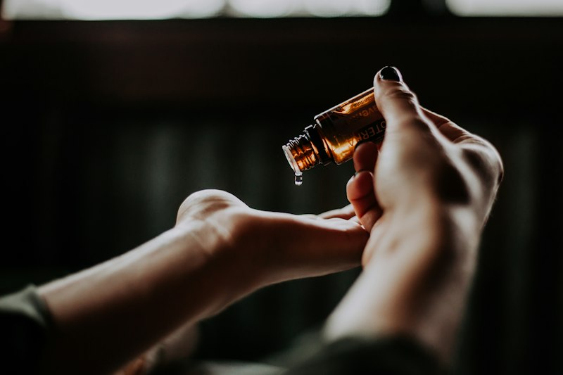

Explore the Reflex Zones of the Soles
Select any reflex meridian zone below to examine its anatomical position, corresponding internal organs, and clinical therapeutic benefits.
Primary Reflex Zones
Head, Brain & Pituitary Gland Zone
Anatomical Location: Tips of Big Toes and Toes 2 through 5

Physiological Impact & Benefits:
Releases mental stress, clarifies thought, alleviates tension headaches, and harmonizes melatonin sleep regulation cycles. By activating sensory receptors connected to cranial nerves, thumb-walking across the toes promotes immediate drop in high-frequency beta brainwaves.
How Reflexology Restores the Entire Body
Clinical research demonstrates that structured foot pressure therapies provide widespread systemic benefits far beyond the feet themselves.
1. Microcirculation & Venous Flow
The pumping motion of thumb-walking stimulates the pedal pump mechanism, accelerating venous blood return to the heart and delivering fresh oxygenated nutrients.
2. Sympathetic Nervous System Reset
Down-regulates adrenaline and cortisol by over 30%, shifting the autonomic nervous system into the soothing "rest and digest" parasympathetic recovery state.
3. Restorative Delta-Wave Sleep
Stimulation of the pineal and pituitary reflex points on the big toe encourages natural melatonin release, allowing guests to overcome nocturnal insomnia.
4. Plantar Fascia & Arch Elasticity
Break down fibrous collagen cross-links in the plantar aponeurosis, alleviating severe morning heel pain and providing spring back into daily strides.
5. Endorphin & Serotonin Boost
Sustained, rhythmic pressure releases natural neuropeptides that act as systemic analgesics, elevating mood and relieving chronic low-grade pain.
6. Lymphatic Cleansing
Flushes heavy metabolic residues and lactic crystals that settle in dependent lower limbs, giving feet a feeling of weightless buoyancy.
Before vs. After a Reflexology Session
| State of Being | Before Treatment | After Session & Tea |
|---|---|---|
| Lower Extremities | Heavy, cold ankles, arch tightness, rigid plantar fascia | Warm, flexible, weightless, decompressed arches |
| Nervous State | Racing thoughts, sympathetic cortisol spikes, screen fatigue | Calm parasympathetic clarity, grounded breathing |
| Sleep Quality | Restless tossing, shallow sleep, morning fatigue | Profound delta-wave rest, waking refreshed |
| Spinal Posture | Slouched lumbar compression from tight foot foundation | Upright, natural spinal alignment from freed soles |